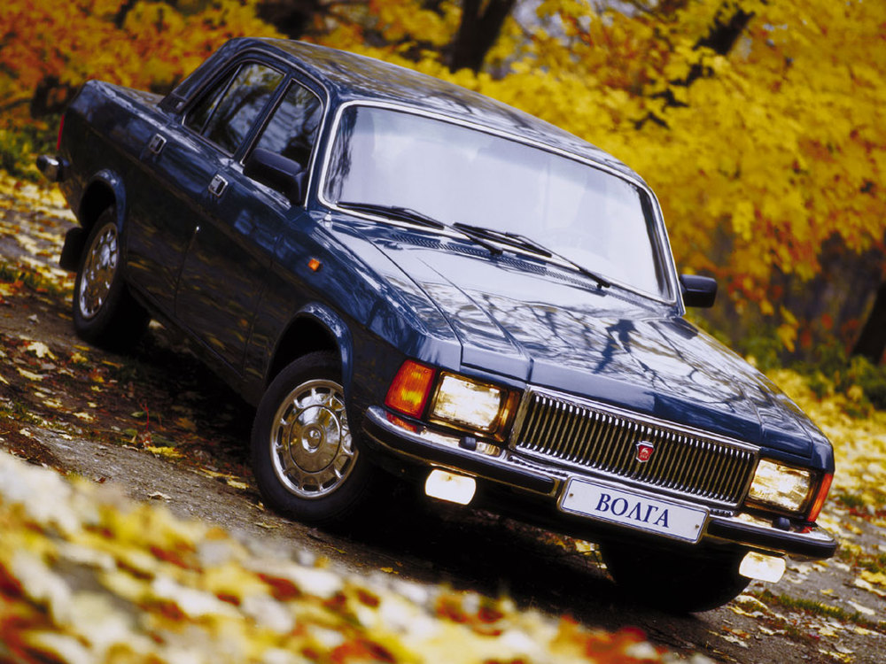
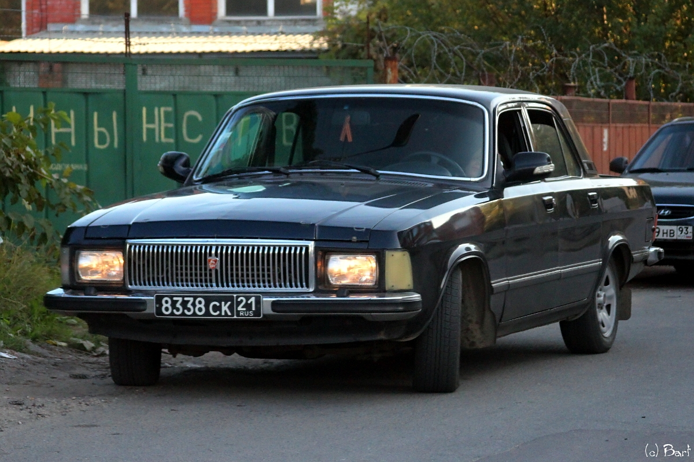
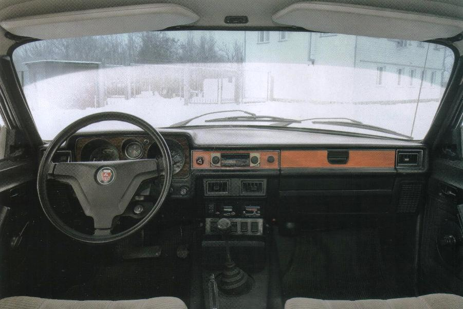

ГАЗ 3102

ГАЗ 3102 Волга - советский, впоследствии российский легковой автомобиль,выпускавшийся с 1981 по 2009 год. Изначально был предназначен для советской номенклатуры среднего звена, а после распада СССР стал общедоступным автомобилем. В постсоветское время, ввиду своей принадлежности к среднему классу,был популярен как средство передвижения у директоров заводов, чиновников разных уровней, военного высшего офицерского состава.

Автомобиль является модернизацией модели ГАЗ 24, которая производилась вместе с 3102 до 1985 года. Это заметно по общему облику автомобиля - в нём заметны черты прошлой модели. Габариты один в один с "двадцать четвёртой" - длина 4.8 м, ширина 1.8м, высота 1.5м . На ГАЗ 3102 устанавливались как двигатели самого завода (ЗМЗ), так и импортные (Chrysler и Toyota). КПП - 4-, либо 5-ти ступенчатая механическая.

Салон, как и полагается внушительных размеров автомобилю, достаточно просторен. Сиденья,дверные карты (в большнистве автомобилей) обтянуты велюровой тканью чёрной,красной,зелёной или бежевой расцветок, передняя панель имеет вставки "под дерево" (накладность использования в производстве натурального дерева), а сами сиденья имеют ортопедическую форму для обеспечения водителю и пассажирам большего комфорта.